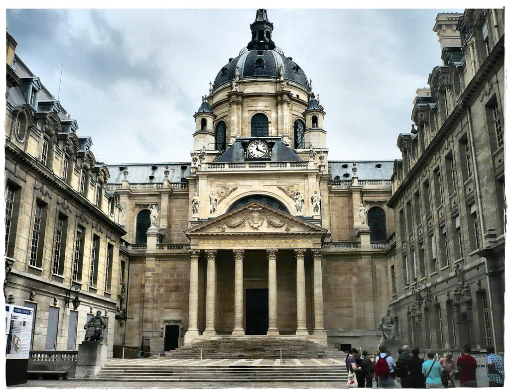

Portraits de Femmes en Sciences
Marie Curie

Marie Curie est née le 7 novembre 1867 à Varsovie en Pologne et elle est morte le 4 juillet 1934 en Haute Savoie en République Française. Son vrai nom est Marie Sklodowska Curie. Elle est née en 5ème dans l’ordre de la fratrie. Elle est née dans une famille apporte une grande importance à l’école. Elle rêve d’étudier lesquels sciences mais à Varsovie les universités ne sont pas ouvertes au femmes. Donc elle et sa soeur ainée Bronia décident de venir en France. Marie Curie réussit avec succès ses études secondaire et elle rêve d’étudier les sciences. En juillet 1893, elle décroche sa licence de physique à la première place, avec la mention très bien. En 1894, elle obtient aussi une licence en mathématique. Et dès décembre 1897, elle commence une thèse de doctorat intitulée « Recherches sur les substances radioactives ». Marie Curie entreprend aussi une thèse de doctorat en physique sur les « rayons uraniques » découverts par Henri Becquerel.
En 1903, elle reçoit avec son mari, le Prix Nobel de physique pour avoir prouver que les corps radioactifs émettent dans l’air un courant électrique qui peut être mesuré et quantifié. Et en 1911, Marie Curie reçoit le prix Nobel de Chimie pour l’ensemble de son travail sur le radium. Marie Curie est la première femme docteur des sciences et première femme à recevoir un prix nobel. C’est la première figure féminine à entrer au Panthéon en 1995 grâce au travaux qu’elle a effectué. Elle est la seule personne à obtenir deux prix Nobel pour ses travaux scientifiques. En 1905, Marie Curie devient alors la première femme en France directrice d'un laboratoire universitaire. Et en 1922, Marie Curie est la première femme membre de l'Académie de médecine.

La seule université qui lui a ouvert les portes est la Sorbonne, d'abord comme remplaçante de son époux Pierre après son décès accidentel, puis comme professeure titulaire de physique générale deux ans plus tard. Les femmes, qui ne formaient qu'un dixième des effectifs étudiants des facultés des sciences à cette époque, en constituent un tiers quand s'éteint Marie Curie.

Grâce à elle, L'Institut du radium accueille aussi de nombreux étudiants et physiciens, notamment étrangers, dont beaucoup de femmes et contribue ainsi à l'émancipation féminine en France comme à l'étranger. L’uranium et le thorium présentent cette propriété de radio activité, mais Marie et Pierre découvrent que des éléments chimiques actifs inconnus présents dans des minerais sont encore plus radioactifs. Ils les baptisent « polonium » (en l’honneur du pays natal de Marie) et « radium ». Un jour Marie Curie a dit: « Dans la vie, rien n’est à craindre, tout est à comprendre» et elle a dit aussi « On ne fait jamais attention à ce qui a été fait; on ne voit que ce qu’il reste à faire». Lorsque la guerre éclate, Marie Curie se mobilise, elle participe à la conception de dix-huit unités chirurgicales mobiles, des « ambulances radiologiques » surnommées les « petites Curies ».
En août 1914 Marie Curie transforme l’Institut du radium déserté en véritable école de radiologie, pour former des bataillons de jeunes femmes. Elle a aussi participé à la création de 150 postes fixes de radiologie, au sein des hôpitaux militaires. Le 28 juillet 1916, elle obtient son permis de conduire et part régulièrement sur le front réaliser des radiographies.
Malheureusement, elle souffre d'une trop grande exposition aux éléments radioactifs qu'elle étudie depuis 1898. Dès le début des années 1920, elle est affaiblie, le radium, pourrait avoir une certaine responsabilité dans ses problèmes de santé. Elle reste cependant à la direction de son Institut, notamment dans le développement d'approches thérapeutiques pour lutter contre le cancer grâce aux radiations produites par le radium. Elle est atteinte d’une leucémie radio-induite, elle meurt le 4 juillet 1934, à 66 ans. Le 28 juillet 1916, elle obtient son permis de conduire et part régulièrement sur le front réaliser des radiographies.